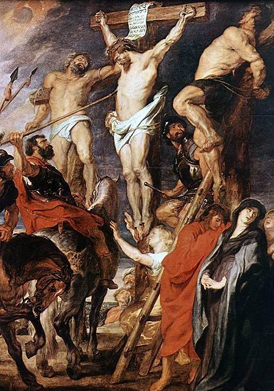
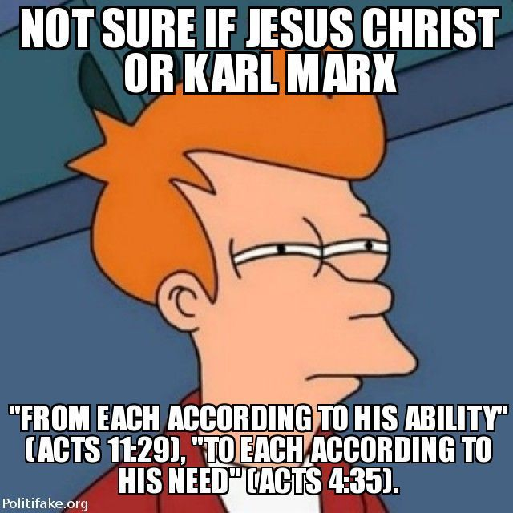
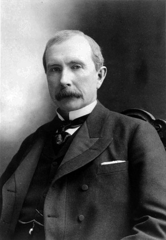
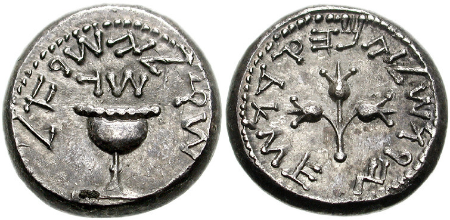
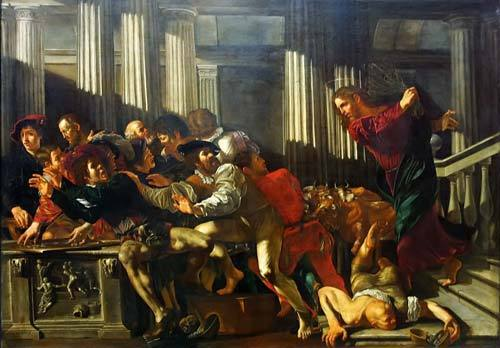

예수님은 진보인데 왜 목사님들은 보수인가 ?
게시: 2018-12-06T06:30:00+09:00
저는 몇번 언급드렸다시피, 기독교에 관심이 많고 실제로 매주 교회에도 나가지만 그다지 믿음이 깊지 않은 반쪽짜리 신자입니다. 구체적으로 말하자면, 신앙심을 가진 분들을 이해도 하고 또 예수님의 가르침이 옳다고 느끼고 세상에는 신이 존재한다고 믿습니다만, 과연 그 신의 이름이 여호와이고 아브라함의 하나님인지에 대한 결정적인 확신이 없어요. 그 점을 먼저 말씀드리고 시작해야 이번에 쓰는 글에 대해 오해가 없겠습니다.
저는 고등학생 때부터 성경에 관심을 가지고 나름 열심히 성경을 읽었습니다. 물론 정식 신학 공부를 하신 신부님들이나 목사님에 비하면 어림도 없겠습니다만, 믿음을 중시하는 일반적인 개신교 신자보다는 성경을 더 많이 읽었다고 자부합니다. 그런데 그렇게 성경을 읽을 때마다 드는 의문점이 한두가지가 아니었습니다. 가령 한가지 예만 들면 이렇습니다.
누가복음 23장 39절부터의 내용은 예수님과 함께 골고다 언덕에서 십자가 형에 처해진 두 강도의 이야기입니다. 둘다 십자가 형에 처해지는 것이 당연한 악당인데, 그 중 하나는 죽어가는 순간에 예수님을 받아들임으로써 오로지 믿음으로 구원을 받는 대표적인 사례입니다. 이것이 이른바 'deathbed conversion'인데, 그래서 불신자들은 '마지막 죽는 순간에만 참회하고 예수 그리스도를 받아들이면 그 이전에는 아무리 악당으로 살아도 천국행 티켓 걱정은 없다' 라고 빈정대기도 하지요. 아무튼 성서에서 매우 중요한 장면 중 하나입니다.
달린 행악자 중 하나는 비방하여 가로되 네가 그리스도가 아니냐 너와 우리를 구원하라 하되
하나는 그 사람을 꾸짖어 가로되 네가 동일한 정죄를 받고서도 하나님을 두려워 아니하느냐
우리는 우리의 행한 일에 상당한 보응을 받는 것이니 이에 당연하거니와 이 사람의 행한 것은 옳지 않은 것이 없느니라 하고
가로되 예수여 당신의 나라에 임하실 때에 나를 생각하소서 하니
예수께서 이르시되 내가 진실로 네게 이르노니 오늘 네가 나와 함께 낙원에 있으리라 하시니라

그러나 같은 장면을 그린 마태복음 27장 38절부터의 부분을 보면 골고다 언덕에 매달리신 예수님 양편에 함께 십자가형에 처해진 두 강도가 예수님을 함께 욕하는 장면이 나옵니다. 분명히 두 강도가 모두 예수님을 욕합니다. 왜 같은 성서에 서로가 모순되는 사실이 적혀 있을까요 ? (참고로 이런 점에 대해 여쭈어 보면, 대부분의 열혈 신자들은 '너의 믿음이 약해서 그렇다' 라고 답합니다. 감히 목사님과 붙잡고 이런 이야기를 해본 적은 없습니다. 일단 무릎 꿇고 기도부터 하자고 하실 것이 겁나서 그랬어요.)
이때에 예수와 함께 강도 둘이 십자가에 못 박히니 하나는 우편에, 하나는 좌편에 있더라
지나가는 자들은 자기 머리를 흔들며 예수를 모욕하여
가로되 성전을 헐고 사흘에 짓는 자여 네가 만일 하나님의 아들이어든 자기를 구원하고 십자가에서 내려오라 하며
그와 같이 대제사장들도 서기관들과 장로들과 함께 희롱하여 가로되
저가 남은 구원하였으되 자기는 구원할 수 없도다 저가 이스라엘의 왕이로다 지금 십자가에서 내려올찌어다 그러면 우리가 믿겠노라
저가 하나님을 신뢰하니 하나님이 저를 기뻐하시면 이제 구원하실찌라 제 말이 나는 하나님의 아들이라 하였도다 하며
함께 십자가에 못 박힌 강도들도 이와 같이 욕하더라
신앙심이 전혀 없을 때 제가 받은 느낌은 이런 것이었습니다. '마태복음은 초기에 그냥 사실 그대로 쓰였는데, 누가복음은 더 뒤에 쓰여져 이런저런 픽션(?)이 많이 들어간 모양이다' 라는 것이었지요. 그리고 제3자 입장에서 보면 이런 결론을 얻는 것이 너무나 당연합니다.
제 주변의 일부 열혈 개신교 신자분들은 이런 제 나름대로의 해석에 펄쩍 뛰십니다. 성서는 사람이 제 마음대로 쓴 것이 아니라, 하나님이 보내신 성령에 따라 쓰여진 것이므로 어느 글자 하나도 잘못된 것이 있을 수 없다는 것이지요. 어느 정도 기독교 신앙을 인정하게 된 지금도, 저는 그런 말은 믿지 않습니다. 그래서 저는 여전히 반쪽짜리 신자인가 봐요. 그래도 지금의 저는, 모세가 홍해를 둘로 갈랐다는 것이 사실이건 사실이 아니건, 또 골고다 언덕의 강도 중 한 명이 예수님을 찬양했건 욕했건 그런 역사적 사실이 진정한 기독교 신앙에게는 별로 중요하지 않다라는 사실을 받아들이고 있습니다.
저도 들은 이야기입니다만, 우리나라의 어느 독실한 신학생이 유럽 어디론가 신학 유학을 가서 겪은 이야기가 있습니다. 장차 목사가 될 독실한 신학생들로 가득찬 그 강의실에서 신학 교수님이 '모세가 홍해를 갈랐다고 실제로 믿는 사람 손들어봐라' 라고 하니 유럽 출신 백인 학생들은 아무도 손을 안드는데, 자기만 손을 들더랍니다. 그러니까 그 신학 교수님이 웃으며 '너는 정말 그게 역사적 사실이라고 믿고, 또 만약에 그것이 역사적 사실이 아니라고 하면 너의 신앙심이 흔들리느냐?' 라고 묻더랍니다. 저도 뭐라고 말로 설명은 잘 못하겠는데, 그 의미를 이제는 알 것 같아요.
(꼭 이렇게 해야만 신앙심이 생깁니까 ?)
하지만 아직도 깊게 가지고 있는 가장 큰 의문점이 있습니다. 짧고 굵게 이야기하면 이렇습니다.
"예수님은 진보인데 왜 목사님들은 보수인가 ?"
너무 짧게 써서 질문 자체가 무척 잘못된 점이 많습니다. 가령 진보와 보수의 개념부터 시작해서, 모든 목사님들이 보수 성향을 가진 것이 아니다 등등 문제가 많은 질문이지요. 그러나 핵심적인 내용은 무엇을 묻는 것인지 다들 이해하실 질문일 거라고 생각합니다.

(이게 예수님 말씀인지 마르크스의 말인지 헷갈리는데...
"각자의 능력에 따라 걷어" 사도행전 11장 29절
"각자의 필요에 따라 나눈다" 사도행전 4장 35절)
예수님은 부자나 재물을 적대시하지는 않으셨지만, 분명히 부자와 권력자보다는 가난하고 힘없는 사람들을 위하여 이 땅에 오셨습니다. 굳이 '부자가 천국에 가는 것은 낙타가..' 라는 유명한 구절이 아니더라도, 공관복음서를 통해 예수님의 언행을 읽으신 분이라면 이 점에 대해서는 동의하실 것입니다. 예수님은 항상 가난한 자들과 창녀들, 그리고 현재로 따지면 일본군 헌병 보조에 해당하는 민족적 배신자인 세리들처럼 점잖은 사회에서 멸시받는 사람들을 가까이 하셨습니다. 가난하고 어려운 자들을 돕지 않는 것은 주님을 외면하는 행위라는 말씀도 하셨지요. 게다가 기존 기득권층인 유대 제사장의 이익에 어긋나는 언행을 많이 하신 결과, 결국 십자가에 매달리는 끔찍한 죽음을 당하셨습니다. 이런 점을 보면 예수님의 행보를 다분히 진보적이라고, 더 나쁘게 왜곡하면 빨갱이스럽다고 표현할 수도 있을 것입니다.
그런데 제가 개인적으로 겪은 바에 따르면 (거의 매주 빠지지 않고 교회에 나간지가 벌써 만 20년입니다) 적어도 한국 개신교 목사님들은 상당수가 보수 우익이십니다. 제가 직접 보고 들은 몇가지 사례들을 나열하자면... 그건 교회 목사님들의 너무 안 좋은 면을 내비치는 것 같아 관두겠습니다.
저는 대형 교회 두 곳을 다녀 보았고, 지금은 작은 동네 교회를 다니고 있습니다만, 그런 경향은 대형이나 작은 교회나 크게 다르지는 않았습니다. 다만, 대형 교회에서는 좀더 재물 이야기를 많이 하기는 했습니다. 심지어 예배 시작할 때 장로님이 앞에 나와 기도를 올리시면서 "불신자들이 저희를 비웃지 않도록 저희에게 재물을 내려주소서" 라고 큰 소리로 외치시는 경우까지 보았습니다. (거짓말 같지만, 정말입니다.) 특히 십일조를 강조하셨는데, 정말 여러번 반복하신 설교 내용이 미국의 록펠러나 포드 같은 재벌들이 십일조를 꾸준히 낸 덕분에 그렇게 큰 부자가 될 수 있었다, 여러분 중에서도 그런 큰 부자가 나와서 우리 교회를 크게 흥하게 해달라는 내용이었습니다. 어떻게 보면 매우 좋은 축복 내용입니다만, 저는 뭔가 잘못 되어도 단단히 잘못 되었다는 생각이 들었습니다. 이건 한국 전통의 구복 신앙과 크게 다를 바가 없다고 느껴졌기 때문이었습니다.

(이 분이 소싯적 가난할 때부터 십일조를 낸 덕분에 당시 뉴욕타임즈가 "the most cruel, impudent, pitiless, and grasping monopoly that ever fastened upon a country" 이라고 평가한 Standard Oil 사를 창립한 록펠러이십니다. 제가 다녔던 교회에서만 이 분에 대해 듣는다면 세상에 이렇게 착하신 분이 없습니다. 그러나 그가 이 세상에 행했던 그 모든 악... 에이 아닙니다.)
전에도 한번 쓴 적이 있었습니다만, 제게 가장 큰 영향을 준 성경 구절은 바로 다음 구절입니다. 저는 전에 어느 분의 장례 미사에 갔다가, 신부님이 읽어주시는 이 글귀를 듣고... 감동도 좀 먹었지만 사실 좀 무섭기도 했습니다. 저는 정말 지옥에 갈 죄인이구나 하는 생각이 들어서 그랬지요. 세상에 어려운 처지에 빠진 사람들이 이렇게 많다는 것을 뻔히 알면서도 제 가족의 행복과 안녕이 더 급하고 더 귀하기 때문에 기부도 많이 안 하는 편이거든요. 아마 그때부터였나... 저는 복지를 위한 중과세에 적극 찬성하는 사람이 되었습니다. 복지를 구현하여 세상에 굶주린 사람이 없게 되면, 저의 가련한 영혼의 죄가 조금이라도 가벼워질 것이라는 생각에서였지요. 지금도 그 생각에는 변함이 없습니다.
마태복음 25장 41~45절
또 왼편에 있는 자들에게 이르시되 저주를 받은 자들아 나를 떠나 마귀와 그 사자들을 위하여 예비된 영영한 불에 들어가라
내가 주릴 때에 너희가 먹을 것을 주지 아니하였고 목마를 때에 마시게 하지 아니하였고
나그네 되었을 때에 영접하지 아니하였고 벗었을 때에 옷 입히지 아니하였고 병들었을 때와 옥에 갇혔을 때에 돌아보지 아니하였느니라 하시니
저희도 대답하여 가로되 주여 우리가 어느 때에 주의 주리신 것이나 목마르신 것이나 나그네 되신 것이나 벗으신 것이나 병드신 것이나 옥에 갇히신 것을 보고 공양치 아니하더이까
이에 임금이 대답하여 가라사대 내가 진실로 너희에게 이르노니 이 지극히 작은 자 하나에게 하지 아니한 것이 곧 내게 하지 아니한 것이니라 하시리니
우리 모두는 매일매일 굶주리고 병들고 옥에 갇힌 사람들을 만나고 있습니다. 부자 동네에 살아서 직접 마주칠 일이 없더라도, 수많은 매체를 통해 매일 그런 사연을 접하고 있기 때문에 세상에는 그렇게 도움이 필요한 사람들이 수없이 많다는 것을 잘 알고 있습니다. 그런데도 그들의 비참한 삶에 대해 외면하고 자신의 이익만을 추구하는 것은, 정말로 예수 그리스도를 믿는 사람이라면, 있을 수 없는 일이라고 생각했고, 지금도 그렇게 생각하고 있습니다.
그런데, 제가 다녔던 대형 교회에서는 그런 모습은 거의 볼 수가 없었습니다. 최소한 목사님들이 가난한 자들을 도와야 한다는 말씀하시는 것을 정말 들은 적이 없어요. 그에 비해 록펠러 이야기는 정말 귀에 못이 박히도록 들었고, 심지어 '일반 신도 수백명보다, 그렇게 거액의 십일조를 낼 수 있는 신도 한 명을 얻는 것이 더 좋을 수도 있다' 라는 말씀을 하는 것까지 들었습니다. (거짓말 같은데, 정말입니다.) 정말 개신교는 자본주의에 맞게 진화한 것 같았습니다. 하긴, 신년맞이 예배에서 목사님이 엄숙하게 '올해의 목표, 1. 교육관 건립 2....' 하는 식으로 그 해의 목표를 정해주시는 교회였으니, 제가 '대체 여기가 교회냐 회사냐 ? 잘하면 올해의 목표 헌금액까지 정해져 나오겠네' 라고 생각했던 것이 무리도 아니었지요. (참고로 그 교회는 결국 교회 본당만큼 커다란 교육관을 세웠습니다. 할렐루야 !)
저는 한국 교회의 이러한 변질이 꼭 한국 개신교에만 해당한다고 생각하지 않습니다. 불교계도 변질되고 부패하기는 마찬가지일 것 같고, 카톨릭도 내부에는 많은 부패와 부조리가 있겠지요. 생각해보면 모든 종교는 시작은 가난하고 핍박받는 사람들을 위해 창시되었으나, 종교 권력으로 성장하면서 결국은 부와 권력 편에 서는 것이 역사적 현실이니까요. 하지만 제가 직접 보고 느낀 한국 교회의 모습은 정말 좀 심각하다고 생각합니다.
저는 이런 모든 것이 결국은 돈 때문이라고 생각해요. 교회도 사람들의 모임인지라, 결국 무슨 일이든 벌이려면 예산이 필요하고, 예산에는 당연히 권력이 따라 붙습니다. 제 개인적인 소견입니다만, 카톨릭이 그나마 그런 경향에서 비교적 자유로울 수 있는 것은, 이미 카톨릭은 전세계적으로 탄탄한 조직과 재원이 마련되어 있고 개인적인 가정이 없으므로, 그런 돈 문제에 있어서 비교적 자유로운 것이 아닐까 합니다.
원래 유대교는 아무데서나 하나님께 제사를 올릴 수 있는 것이 아니라, 반드시 예루살렘 지성소 바로 밖에 있는 지정 장소에서, 대제사장의 집전 하에서만 제물을 바칠 수 있었습니다. 그런 교리는 대제사장 계급의 막대한 경제적 이익으로 이어졌습니다. 그렇게 바쳐지는 제물로 인한 경제적 이익, 특히 성전에 봉헌되기 위해서 반드시 로마 화폐인 데나리온을 성전세 지불용 화폐인 셰켈로 환전해야 하는 과정에서 발생하는 독점적 환전 이익이 막대했거든요. 그 부분을 읽으니, 다들 아실만 한 어느 유명 복음 교회에서 발간하는 신문집에서 읽은 문답이 기억났습니다.

(이것이 성전세 납부용으로 사용된, 예루살렘에서 주조된 화폐 shekel 은화입니다. 이 은화는 반 (half) 셰켈짜리입니다. 당시 성전세는 당시 성인 남자 일인당 반 셰켈로 정해져 있었으므로, 좋든 싫든 일반적인 화폐 데나리온을 반드시 반 셰켈 또는 셰켈로 환전해야 했는데, 그 과정에서 상당한 차익이 대제사장의 손으로 흘러 들어갔습니다.)
그 문답에서, 어느 신자가 '가난하고 어려운 이들을 돕고 싶은데, 교회에 십일조를 바치는 대신 직접 그 사람들 또는 단체에 기부를 하면 안될까요 ?' 하고 물으니, 그 교회의 단호한 답변은 이랬습니다. '안된다. 교회를 거치지 않고 직접 돕겠다는 것은 개인의 오만이다. 반드시 교회에 바쳐라.'
성서에 따르면 예수님이 십자가에서 돌아가실 때 지성소에 쳐진 장막이 찢어졌고, 그것이 뜻하는 바는 더 이상 예루살렘 성전을 통해서만 하나님과 소통해야 한다는 제약이 사라진 것이라고 했습니다. 그러나 여전히 한국 교회에서는 교회를 통하지 않고 빈민을 돕는 것이 '개인의 오만'이니 허락할 수 없다는 모습에서, 저는 예수님이 '독사의 자식들아' 라고 비난하시던 유대교 제사장들의 모습을 보았습니다. 예수님은 폭력에 의존하지 않는 혁명을 추구하셨지만, 성전에서 대제사장의 돈벌이판이 벌어지는 모습을 보시고는 희생 제물용으로 판매되던 가축들을 쫓아내고 환전상의 가판대를 힘으로 뒤엎으셨습니다.

(제가 알기로는 예수님이 물리적인 폭력을 사용하신 것은 권력을 이용하여 성전에서 경제적 독점권을 취하던 이들을 내쫓을 때 뿐이었습니다.)
저는 성서를 글귀 한글자한글자에 교조주의적인 맹신을 가지고 해석해야 한다고 보지는 않습니다. 전에 다녔던 대형 교회에서는 어느 복음서의 시작 부분이 '너희가 강녕하기를 바라노라' 라는 당시의 평범한 인사말로 시작하는 것을, '봐라, 주님께서는 우리가 돈 많이 벌고 풍요롭게 살기를 바라신다' 라며 자본주의를 찬양하는 내용으로 해석하시더군요. 특히 말라기에 나오는 십일조를 바치면 그 백배천배의 경제적 이익을 얻게 될 거라는 부분은 글귀 하나하나를 정말 너무나 애용하는 부분입니다. 그러면서도 '천국에 가려면 가진 것을 모두 팔아 가난한 자들에게 나누어주고 나를 따르라' 부분은 그렇게 글귀만 보고 해석해서는 안된다고 딱 선을 그으시지요.
특히 우리나라에서 개신교와 카톨릭이 정면 충돌하는 부분이 제사 부분입니다. 개신교는 '우상을 숭배하지 말라'라는 십계를 글자 그대로 해석하여 금지하는 것에 비해 카톨릭에서는 제사 행위 자체를 우상에 대한 숭배가 아니라 고인에 대한 예의라고 판단하여 허락하지요. 참고로 저는 제사 폐지론자입니다만, 제사가 우상 숭배라는 생각을 하지는 않습니다. 돌아가신 조부모님이나 부모님 등의 분들에게 초능력이 있어서 간절히 모시면 우리 소원을 들어준다든지, 반대로 제삿상이 부실하면 화를 내고 우리에게 재앙을 가져온다고 생각하는 사람이 몇이나 되겠습니까 ? 교회에서도 우상의 정의를 '주님보다 더 소중히 모시는 것'이라고 합니다. 저는 현대의 한국 교회들 중 많은 수가 주님의 말씀을 저버리고 돈을 우상으로 숭배하는 것 아닌가 합니다. 정말로 주님을 따른다면 성경 내내 여러차례 반복되는 아래의 말씀들을 도저히 무시할 수가 없습니다.
이사야서 58:7
너희는 굶주린 자에게 너희 음식을 나눠 주고 집 없이 떠돌아다니는 가난한 사람을 너희 집으로 맞아들이며 헐벗은 자를 보면 입히고 도움이 필요한 너희 친척이 있으면 외면하지 말고 도와주어라.
누가복음 18:22
예수님은 이 말을 들으시고 이렇게 말씀하셨다. '아직도 네게 한 가지 부족한 것이 있다. 너는 재산을 다 팔아 가난한 사람들에게 나눠주어라. 그러면 네가 하늘에서 보물을 얻을 것이다. 그리고 와서 나를 따르라.'
요한일서 3:17
많은 재산을 가지고 있으면서 가난한 형제를 보고도 도와 주지 않는다면 어떻게 하나님을 사랑한다고 하겠습니까?
다른 사람들은 몰라도 진정한 기독교인이라면 가난하고 어려운 사람들을 돕는 일이라면 발 벗고 나서야 합니다. 그리고 그런 주님의 뜻이 이 사회에서 가장 잘 구현될 수 있는 길은 사회 복지 확대입니다. 결국 사회 복지 확대 재원을 위해서는 부유층에게 어느 정도 증세를 하는 것은 피할 수 없는 일이겠지요. 그것 때문에 부유층에서는 진보적 정권이 들어서는 것을 극도로 혐오하고 부유층과 밀착한 언론에서는 있는 말 없는 말을 다 끌어들여 진보 정권을 공격합니다. 이런 상황에서 왜 주님을 따른다는 개신교 목사님들이 극우파스러운 언행을 하시는지 정말 의아합니다. 도대체 (일부) 한국 개신교 목사님들은 어디서부터 잘못 되었길래 '남이야 어떻게 되건말건 많은 돈을 모아서 대를 이어 떵떵거리며 사는 것이 주님의 은총을 입증하는 길'이라고 믿게 된 것일까요 ? 개탄스럽습니다.
* 예전에 다음 블로그에 썼던 글 약간 고쳐서 다시 올린 것입니다. 매주 목요일엔 주로 과거 글을 옮겨 옵니다.
** 물론 훌륭한 목사님들과 훌륭한 성도님들 많습니다. 개신교 전체를 매도하지는 말아주셨으면 합니다. (반쪽짜리이긴 하지만) 저도 개신교 신자입니다.
*** 댓글 중에 '예수님께서 일하지 않는자 먹지도 말라' 라고 말씀하셨는데 이건 진보 성향인가 보수 성향인가' 라고 물으신 분이 있었고, 바로 그 밑에 다른 분이 '그건 예수님 말씀이 아니라 바울의 말씀이다' 라고 댓글을 다셨네요. 찾아보니 다음과 같습니다.
데살로니가 후서 3장
6 형제 여러분, 우리 주 예수 그리스도의 이름으로 여러분에게 명령합니다. 여러분은 제멋대로 사는 사람들과 우리에게 가르침을 받은 대로 살지 않는 사람들을 멀리하십시오.
7 여러분은 우리를 본받아야 한다는 것을 잘 알고 있습니다. 우리는 여러분과 함께 있을 때 제멋대로 살지 않았으며
8 아무에게도 공밥을 얻어먹지 않았습니다. 오히려 우리는 여러분에게 짐이 되지 않으려고 밤낮 수고하며 열심히 일했습니다.
9 우리가 여러분에게 도움을 받을 권리가 없어서 그렇게 한 것이 아니라 여러분이 우리를 본받게 하려고 몸소 모범을 보인 것입니다.
10 우리가 여러분과 함께 있을 때에 “일하기 싫은 사람은 먹지도 말라” 고 가르쳤습니다.
11 그런데 여러분 가운데 게을러서 아무 일도 하지 않고 돌아다니며 문제만 일으키는 사람들이 있다는 말을 들었습니다.
12 그러므로 우리는 주 예수 그리스도의 이름으로 이런 사람들에게 명령하며 권합니다. 조용히 일하며 자기 생활비를 벌어서 살도록 하십시오.
이건 당시 텟살로니카 교회에서 공연히 사건만 일으키고 신도들에게 경제적 부담만 줄 뿐 좋지 않은 영향을 끼치는 사람들을 경계하는 말씀입니다. 바울은 원래 바리새인으로서, 바리새인들은 율법학자로서 살더라도 종교 활동을 본업으로 해서는 안 되고 자기 자신의 노동으로 벌어먹을 수 있어야 한다는 가르침을 가지고 있었습니다. 그래서 바울도 율법학자가 되기 전에 텐트 제조 기술을 배웠고 실제로 사역 활동 중에도 노동을 해서 스스로의 생활비를 충당했습니다.
사도행전 18:3 바울은 그들의 직업이 자기처럼 천막을 만드는 일이었으므로 그들과 함께 머물면서 일하였다.
결론적으로 “일하기 싫은 사람은 먹지도 말라”라는 말씀은 노동을 하지 않는 전업 종교인을 가리키는 말이라고 할 수 있습니다. 사실 베드로는 일을 하지 않고 신도들의 도움을 받아 전적으로 사역만 했는데... 제가 알기로는 베드로와 바울의 관계가 썩 매끄러웠던 것 같지는 않습니다.
오히려 공산주의자들은 저 말씀을 '노동을 하지 않는 자본가들'을 공격하는 용도로 쓰는 모양입니다. 확실히, 자본주의적인 말씀은 아닌 것 같습니다.
1936 CONSTITUTION OF THE USSR
ARTICLE 12. In the U.S.S.R. work is a duty and a matter of honor for every able-bodied citizen, in accordance with the principle: "He who does not work, neither shall he eat."
The principle applied in the U.S.S.R. is that of socialism: "From each according to his ability, to each according to his work."